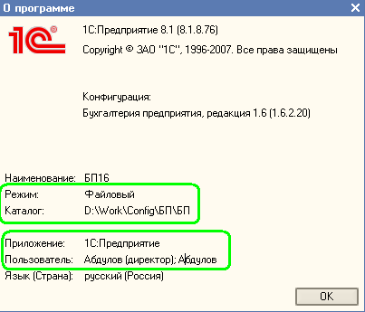

Для настройки обмена данными нужно знать где находится информационная база, с которой нужно организовать обмен данными (информационная база-приемник). Для этого достаточно открыть программу. В главном меню выбрать пункт "Справка\О программе".

Обратите внимание на следующие параметры (все они могут быть скопированы из формы):
Режим - либо файловый, либо серверный. Если режим файловый, то информационная база находится в каталоге на данном компьютере или в локальной сети. Если режим серверный, то для подключения нужно знать имя сервера и имя информационной базы на сервере.
Каталог - для файлового режима указывается каталог, в котором располагается информационная база.
Сервер - для серверного режима указывается имя сервера 1С:Предприятия, на котором расположена информационная база.
База - для серверного режима указывается имя информационной базы на сервере 1С:Предприятия.
Пользователь - имя пользователя, который вошел в информационную базу. Если в имени пользователя присутствует ";", то в качестве имени пользователя для подключения нужно использовать имя от начала строки до ";".
В приведенном примере параметры следующие:
Режим - файловый
Каталог - D:\Work\Config\БП\БП
Пользователь - Абдулов (директор)